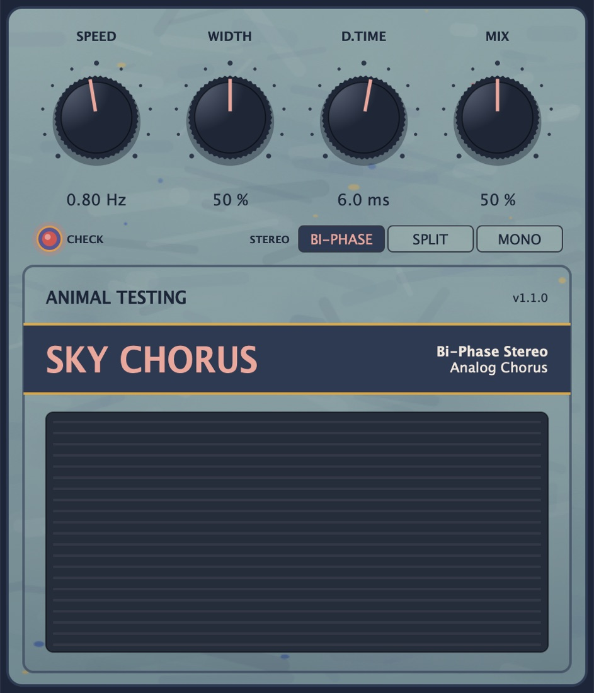

WaterfallEffect · Chord resonator
WtflRings anything through a chord of tuned resonators. Water striders skate over the spectrogram while it plays.
- Key, Octave from C-1 to G9, and Chord
- Brightness, Decay and Mix
Fuzz pedals, tape, chorus, reverse, a waterfall and a notepad. VST3, AU and Standalone for macOS and Windows, built for Ableton Live and anything else that loads a plugin.
Rings anything through a chord of tuned resonators. Water striders skate over the spectrogram while it plays.

A worn tape machine on a matte silver deck, with reels that turn with the tape. Fitted to measurements of real tape processing.

A mid-80s bucket-brigade chorus, all 1024 stages run at their own swept clock.

Fuzz modelled on the green Russian muff pedals of the 90s: thick, scooped and endless.

Low-gain blues overdrive with two cascaded clipping stages. Made to sit at the end of the chain, after reverb and delay.

Everything backwards. Each note swells up in reverse and cuts off, or every stretch of time plays back the other way round.

A notepad that lives in the set. Lyrics, mix notes, anything, saved with the project.
Nothing in this group.
Get the zip for your system from the latest release. Each zip holds every plugin as VST3, AU (macOS) and a Standalone app.
| Format | macOS | Windows |
|---|---|---|
| VST3 | ~/Library/Audio/Plug-Ins/VST3/ | C:\Program Files\Common Files\VST3\ |
| AU | ~/Library/Audio/Plug-Ins/Components/ | n/a |
In Ableton Live, open Settings → Plug-Ins, turn on the VST3 system folders (and Audio Units on a Mac), then click Rescan. They show up under Plug-Ins → Animal Testing.
The Mac builds aren't notarized yet. If macOS says a plugin is damaged, clear the download flag in Terminal:
xattr -dr com.apple.quarantine ~/Library/Audio/Plug-Ins/VST3/AT* ~/Library/Audio/Plug-Ins/Components/AT*